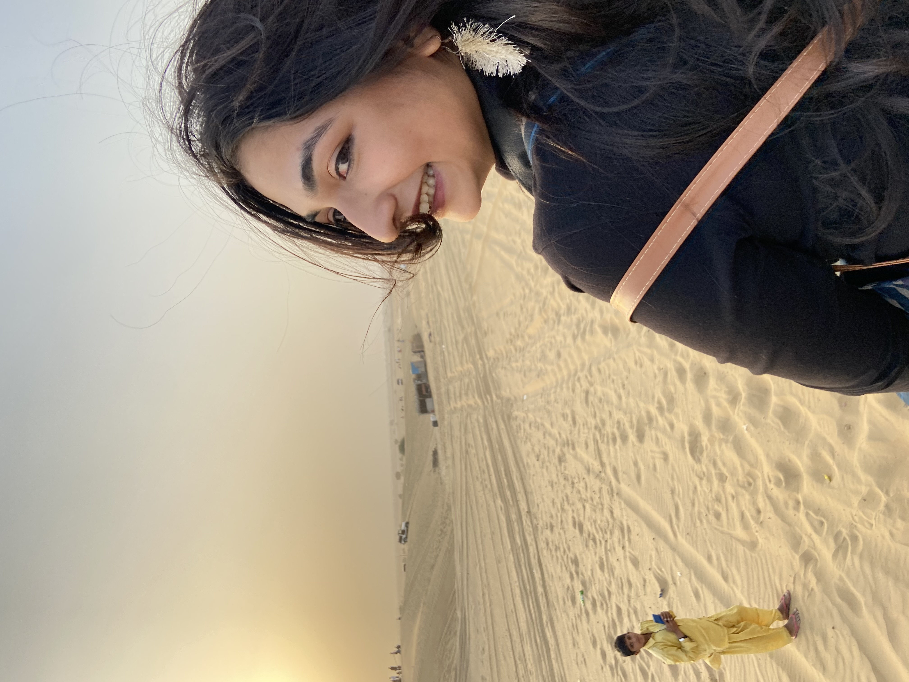
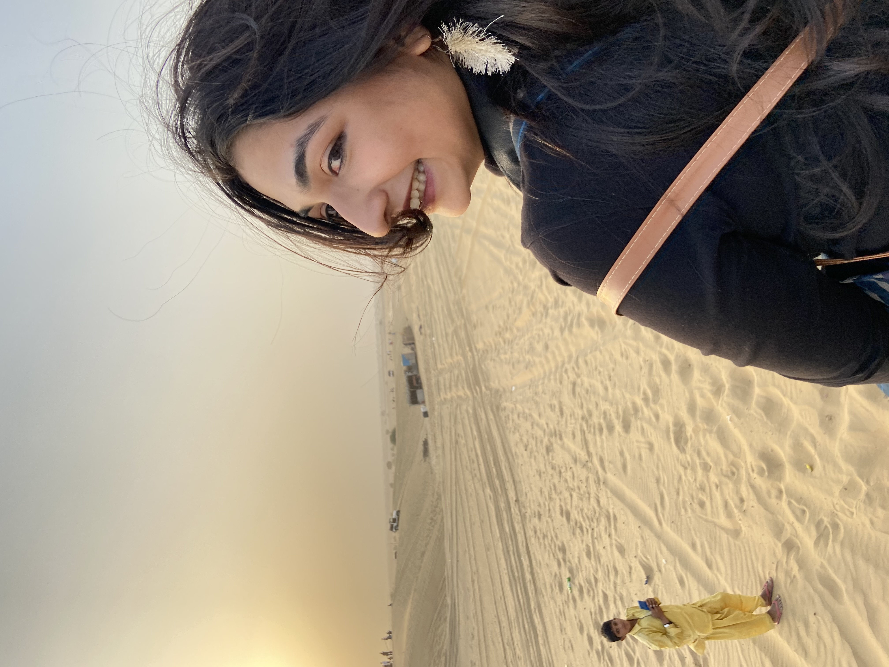
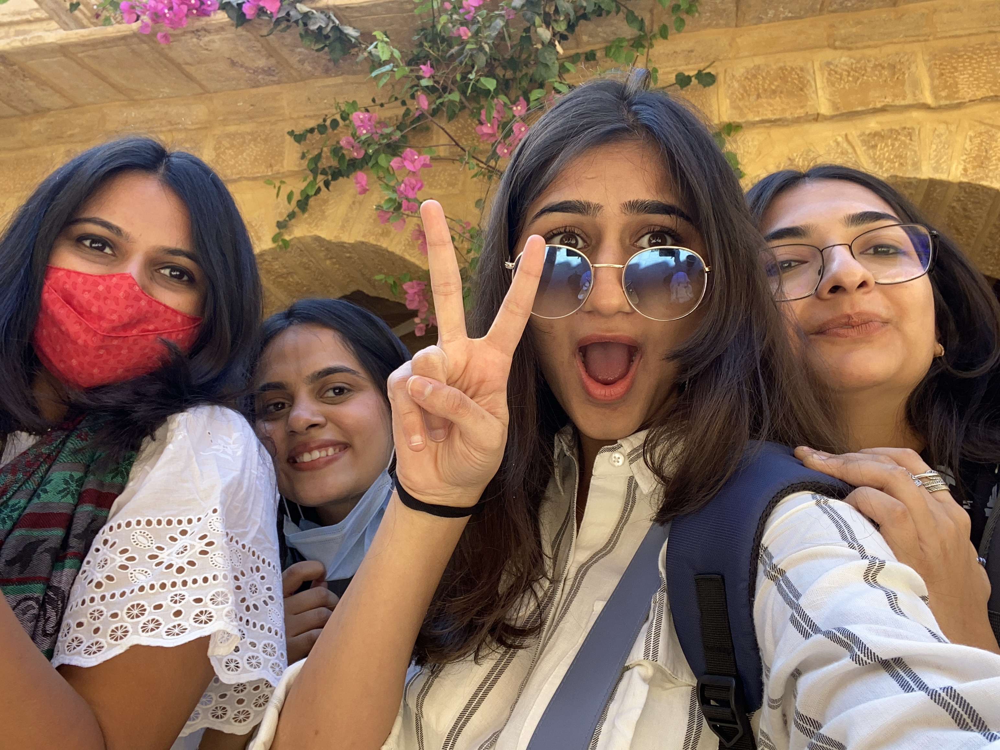
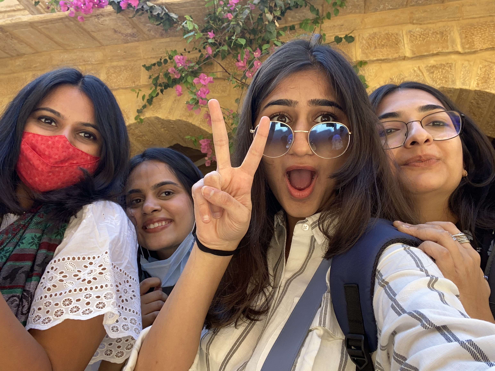

Day 1: Dream Glow


 

OH MY GOD! We had been planning our girl's trip since a year or two. We always had to rain check for some trivial reasons like laziness assignments. Yes, college is tough. So, after our classes were shifted to online mode and after a year's waiting (i.e. 2020) we finally decided to go in february, right after mid-semesters before other work starts piling up. K was hell-bent for going on a trip and because of that we were all on board for it. After jumping from myriad places from mussoorie, to manali to madhya pradesh to almost booking tickets for matheran, we finally settled for jaisalmer. First, it's an easy ride and second, we wanted a leisure trip. So rajhasthan kind of fits into our little squres of requirements. So, right after our exams, we left for rajhasthan on 27th february. WE WERE SO EXCITED. OUR FIRST GIRLS TRIP. CAN YOU BELIEVE IT? AFTER ALL THESE YEARS? So kals, k and I left for ahmedabad at 5. While we were leaving, there was still a moon in the sky. Full moon. K had her dslr w her and therefore she was all ready to capture memories. While she was clicking moon's photos, she peeked outside the window just to get a better view. And she lost her glasses! It was a scene right out of some movie. Kals and I were busy talking with each other and clicking pictures of our own. But the car stopped. And we were all blank, staring at K and waiting for her parent's reaction. They firstly went out to look for it. It was a highway so there was no way we could have taken a u-turn. But her mom and k went ahead to look for it ntl. And they found it! W/out any scratch! I WANT THESE GLASSES! We all fell silent for the most of the ride and cut to the airport. We met p there, bid our byes to their parents and were inside. All excited and ready to board the flight. We clicked pictures in the plane because why not. We were given a special pack of snacks because apparantly we had booked it online maybe(?) im not sure. But we felt special. We exited the flight and were met by our driver. Shady guy but acutally turned out to be a very helpful guide during our whole stay. If i were to name the filter for igram for this place then it would be ochre. The whole ride to our hotel was beautiful. We stopped by to click pictures w the sheeps, our driver made us taste this chai which was amazing. It was sunny but not hot. We reached hotel. We were given a deal by our driver for our safari. We thought of it all to be very shady at first but after talking to our dads, taking a leap of faith into trusting our driver after much scrutiny we said yes to him. After All he was also giving a good discount and he did try to prove himself to be quite trustworthy. Okay, enough about him. So we got all ready for our desert safari. After almost an hour's ride, we reached the sand dunes. It was beautiful. So bright and in expanse till your eyes can see. We then went for camel safari & jeep safari. We were now all claded in sand and our hair was a nest. But we still managed to look not all bad. Yes, I know, it's important to look pretty. All the fucking time. We were then told that there was a some kind of desert carnival and that kailash kher was going to show up. So we went ahead and found a cozy spot on one of the sand dunes. Now, the events that followed after werent we expected at all. In the span of an hour, we ate an icecream facing the moon, I lost my phone (found it later tg), we were met by few shady strangers, were catcalled, and were in desperate need to reach the hotel. It was a little too much for me personally, but in retrospect, it wasnt all that scary. So after that it was all fun and pretty. We ate dal batti. Kals tasted it for the first time and she loved it (tg)! We rode back to our hotel after an hour or two. K still had her paper for the psychology to write while I had my presentation for design thinking the next day. So we all bid our goodbyes and went to sleep early. In our cozy little beds, w cozy little lights on.


 
